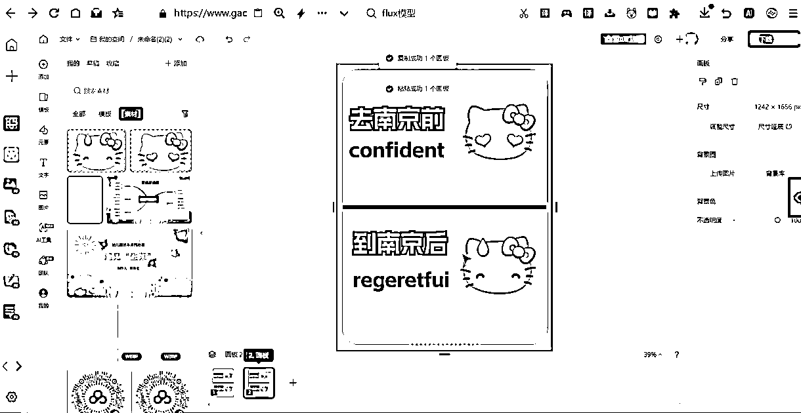
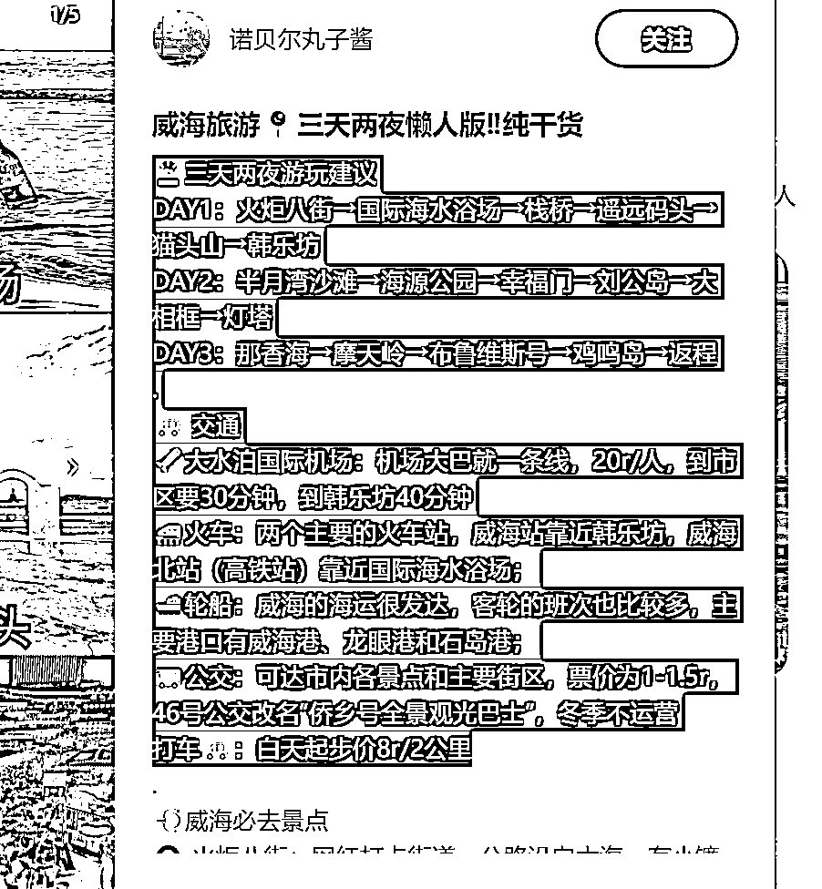

来源：https://o0yvn3o31a.feishu.cn/docx/Al0PdhswtogrN5x8YGocSKaenQh
大家好，我是黄岛主！
最近在做的旅游攻略虚拟资料项目给大家拆解下，这个项目很简单，主要在小红书上发笔记、评论区节流等方式去做引流，引来的精准粉丝在引导到私域微信上并转化，整体项目的操作模式非常简单化，基本上只要你看完我拆解的项目玩法去做就可以进行常规的变现，可以说没什么难度哈！
来，看下这个项目的优势：只要流量足够，卖旅游攻略就属于长期的变现项目，因为很多父母都会抽时间带孩子出去玩，现在家家都有车了，基本上外出旅游都会选择自驾游。但是，很多家长没有旅游景点的路线攻略，而且他们也不会自己去整理，因为时间就是金钱，所以他们会去一些平台上挖掘旅游攻略，比如小红书上去搜索某某旅游攻略。
另一方面优势就是：旅游行业很吃季节性，不同的季节不同的景点旅游。比如夏天大家去海边，那么可能首选威海，因为这里的平均气温在 24℃左右，可以去海水浴场享受沙滩和海水带来的清凉。再比如秋天大家喜欢去九寨沟，因为秋天是九寨沟一年中最美的季节，且9月下旬到11月初是最佳游览时间。
所以，综合去看的话，这个项目优势非常适合大家一年四季去做！而且在小红书上去引流卖自驾游旅游攻略的话，单份资料可以卖29.9-39.9，如果遇到想卖不同景点的攻略，我们可以全部资源打包卖59.9-69.9甚至更高的价格。除非你遇到一个穷游不舍得花钱的人，但凡遇到有点消费能力的都会去买。
重点是：我们做这个项目没什么成本的，只要你在小红书上发笔记，有人私信你要攻略，然后引流到微信上，你在把整理好的旅游攻略卖给客户，基本上卖一单就赚一单。而且，我们可以矩阵上号去做这个项目。
上面很多城市的旅游攻略资料，我可以无偿分享给圈友：
通过网盘分享的文件：旅游攻略资料
链接: https://pan.baidu.com/s/1Cr6SP6F0UEKtgHM2V3dL_g 提取码: y558
--来自百度网盘超级会员v9的分享
好了，下面我来讲下具体的操作玩法：
先说下这篇文章的组成：注册、养号、制作、引流、变现，这几个模块来呈现出这篇文章哈，但主要部分是制作部分，因为笔记承载着整个项目的核心。而非核心的，像账号注册、养号什么的，这些都是次要的，而且很多圈友也都会操作，这里我也就简单跟大家说下即可，不懂我再跟我交流就行了。
小红书注册还是很简单的，有手机号和手机设备就可以去注册，流程包含这些：
1、手机里下载小红书APP
2、选择手机号登录
3、输入手机号，获取验证码，勾选已阅读并同意
4、然后点击登录
这里不详细说明了，但是有几个注册要点，我简单说下：
1、一机一号一ip：单独一台手机，一张手机卡，用流量注册哈，需要流量卡渠道也可以找我推。只要你保证注册的是新号就行了。
2、注册时，生日选择大概1个月内的。因为小红书生日当天会发一张生日流量券，有效期半个月，这个到时候有利于发笔记的时候使用！
3、小红书注册需要选择年龄：20出头就行了；爱好什么的，随便选就行了。
4、先不用修改小红书名字，也不写简介。建议养完号以及发了3篇笔记后，再改名字和写简介，不要一上来就改哈。你去点赞同行的笔记，容易被同行拉黑。
5、我是建议大家新开账号，或者把老账号注销掉变成新账号，不要用发过其他内容的老账号来做这个项目。
第一点：老账号如果长期发一个领域的内容，标签已经定死了，换个赛道不容易热门
第二点：你的老账号可能长期没发布，账号权重流失严重，再发就不热门了
所以：空白新号，你从0-1去做会更顺畅，不会有那么多的烦心事
关于养号，没什么难的，我们的方法就是搜旅游景点的相关关键词，看相关内容，然后刷账号的活跃度。一定不要去纠结什么养号方法、什么七天螺旋、什么养多少天，养好或养不好等。基本上按照我说的养号建议，发布第一批笔记小眼睛都在100+以上。
比如你在小红书上搜 威海 两个字，下拉框自动出来相关长尾词，然后你可以点下拉框也可以手动去搜索，去看别人的笔记，然后开始养号。
下面是我们正在做的养号方案也很简单，基本上满足大家的养号需求：
第一天：注册账号要用流量，注册完当天不要动
第二天：开始养号，每天刷领域垂直笔记，刷30分钟，分时段刷
第三天—第五天，保持养号，适量点赞收藏评论
第五天：改包装，人设要打造好，上午刷笔记，下午发一篇笔记测流量
领域干货笔记，当天过100小眼睛，账号没问题
制作方面比较简单，基本上按照我给的SOP就可以正常把笔记制作出来，下面我们详细的来看下，有问题再跟我交流就行了。
制作之前，我们先去找下对标素材，可以看一下对标同行发的都是哪些，比如在小红书首页搜索南京旅游攻略，找一写点赞比较高，容易做的图文。
比如：图片上这种，主图就很简单，用两个大黄的表情头像，加一些文字内容进去，也可以放其他的表情包或者贴纸人物进去，然后放上文字，后边的图片可以直接截图过来去用，放上一张背景图就可以了，以他的这个为例，点开头像进去看一下，他这个好几条点赞量都很高，我们可以按照他的笔记去操作。
我们制作笔记需要用到的软件是稿定设计，如果你有创可贴、图怪兽，这些这些也可以用，哪个方面哪个来，都是一样的功能的。
下面我用稿定设计给大家拆解制作流程：
首先打开稿定设计，右上角创建设计，选择小红书配图，先制作主图，制作之前先去找一些背景图片，背景图片可以去小红书、百度里面去搜索，找一些比较简单的背景图，然后把链接复制出来，到微信搜一搜里面搜皮皮去水印或者轻抖去水印小程序都可以。

或者直接截图也可以，我直接给大家截图操作，大家可以自己去搜索小程序下载无水印的图片，然后把背景图拉到稿定设计里面，放大移动到合适的位置，放进来之后看一下同行主图写的是什么内容，我们也写上，输入文字，然后修改一个字体，没有会员的话就找不需要会员的字体，文字颜色改一下，正常用的都是黑色，再新建一个副标签，把英文输进去加粗一下，放到合适的位置字体，也可以改一个特效，比如用这个黄色的，调到合适的位置。
调完之后再找大头的表情图片，图片可以去小红书、百度都可以搜，比如搜索小黄脸表情包，不需要找一模一样的，可以找别的，想用哪个就用哪个，直接点开，截图下载保存到桌面上，一共两张表情包，一前一后，然后把图片里面的表情包抠出来。
抠图的方法我说下：
第一种方法：打开美图秀秀，打开之后点击抠图，抠图之后把图片给它放进去，就自动扣完了，然后点击保存，普通用户一天是有两张免费抠图的次数，如果想扣更多的话，可以直接去淘宝或者闲鱼买个会员，一天一两块钱就可以了，一天可以免费用两次，保存完成，可以多个账号换着去扣，然后点击保存去。
第二种方法：用这个在线抠图网站，这个是免费的
https://www.photoroom.com/tools/background-remover
扣完表情图之后，来到稿定设计里面，在中间给它添一条横线，点击左边工具栏里面的元素，找到横线，大概放在中间位置，然后把的图片放上去。
然后主图就做好了，可以去适当的去给它添加一些贴纸，但是不建议大家添加太多复杂的，想放哪个贴画就放哪个，后期如果作者找到说他这个是原创的话，我们就再去更改或者删除就行，正常的话是不会找到你的，背景颜色可以随便去换，纯色或者其他好看的风景图片都可以直接替换使用，做好之后下载保存图片，右上角点击下载，选择个人供应使用，点击下载，下载完之后，主图保存一下文件。
保存完之后，把主图复制一层出来，复制一层出来，然后在上面去截一下同行后面内容的图片，保存下来，也可以自己把文案识别出来输入进去，文字提取出来，然后放到里面去，都可以，有广告的图片就不放了。

图片截好之后，打开搞定设计，粘贴一层出来之后，把上面多余的删掉，把截好的同行发布的笔记图片拉进去，调整到合适的位置，拉进去之后，给它放到合适的位置，上面写上对应的标题，南京旅游景点推荐，把字体调节一下大小，然后下载一下图片，下载时候选择一张就可以了。
作品类型的一定要选择PNG格式的，点击个人公益使用，然后下载，再把后面的几张截图依次拖进去，调整到合适的大小，加上文字，保存到电脑就可以了。

细节注意下：主图的一个模板做好之后，后面就快了，可以一段时间内一直用一个主图，这个你研究下就知道了，很简单的。
发布的话，主要这几个方面：标题、正文、话题、标签、时间段、篇数等，下面我详细的说下！
标题我们抄对标就行了，复制过来 AI伪原创下就行了，我们这里要用的是Kimi这个网站，地址是https://kimi.moonshot.cn/ 其他AI网站都可以，比如豆包、闻言一心等。
如图对标：
操作方式：
帮我伪原创这个标题：威海旅游📍三天两夜懒人版‼纯干货
然后直接用就行了，如果你觉得不满意，可以多生成几个：
和标题一样，我们要把对标发的文案复制出来，用AI去伪原创下：
操作步骤很简单：新建对话框，把文案整理一下粘贴进去，在开头写上，把下面的文案伪原创润色一下，发布的小红薯平台，然后他就给输出一段文字，我们把文字修改一下，在发布的时候，直接粘贴到正文里边就可以了，写的很详细，直接粘贴进去就行，话题标签都生成好，我们在发布的时候，可以直接复制粘贴，但是要记得#号重新输入。
下面的图是对标的：

正文内容复制到AI软件里去伪原创：
话题可以写上威海，威海酒店等，这个无所谓的
标签抄对标的就行，很简单，如图：
分早中晚发布就行了，可以测试哪个时间小眼睛多或者能热门
基本上2-3篇每天的去发，可以多账号矩阵去做的
引流方法这块说下：
发一段时笔记后，会陆陆续续的有精准粉丝来了之后会私信你要攻略的，然后我们可以建一个群做引导，直接把微信号发群里，然后粉丝就会加到你的微信，微信里在转化！
定价这块说下：
我们卖的旅游攻略方面的虚拟资料，我们可以在微信上售卖攻略，一份29.9-39.9，全部打包59.9-69.9都都可以的。
转化话术这块说下：
客户加到微信会问你：你好，有去威海玩的攻略吗？
我们回复：你好，有的
但整理搜集不易，小偿29一份。
然后客户基本上会付款，但凡不付款的后面在想办法转化！
那么成交一份攻略的话，我们完成交易以后可以顺便提一句：我们总共100多个旅游景点全套攻略，全部打包卖59，有需要就联系，毕竟多花一半的价格就可以买到100多份，很多人会直接选择全套，基本上几句话就可以成交，而且没有售后。
其他相关变现建议：
另外，做这一个项目一段时间之后，微信上会累积到一定的粉丝，可以找旅游团合作，叫他们发一些文案、图片给你，我们直接发圈，别人看到就会问你，不可能每一次都是自自驾游，就会过来问你，直接就对接给旅游团就可以了，实现被动成交。
差不多这些吧，按照我写的这个SOP可以完美的去操作这个项目，如果你感兴趣可以看完就去实操，做出效果也可以找我反馈的，好了，有问题私信我找我交流就行了！
注意：未经授权，禁止转载到各大平台，需要授权，找黄岛主即可！